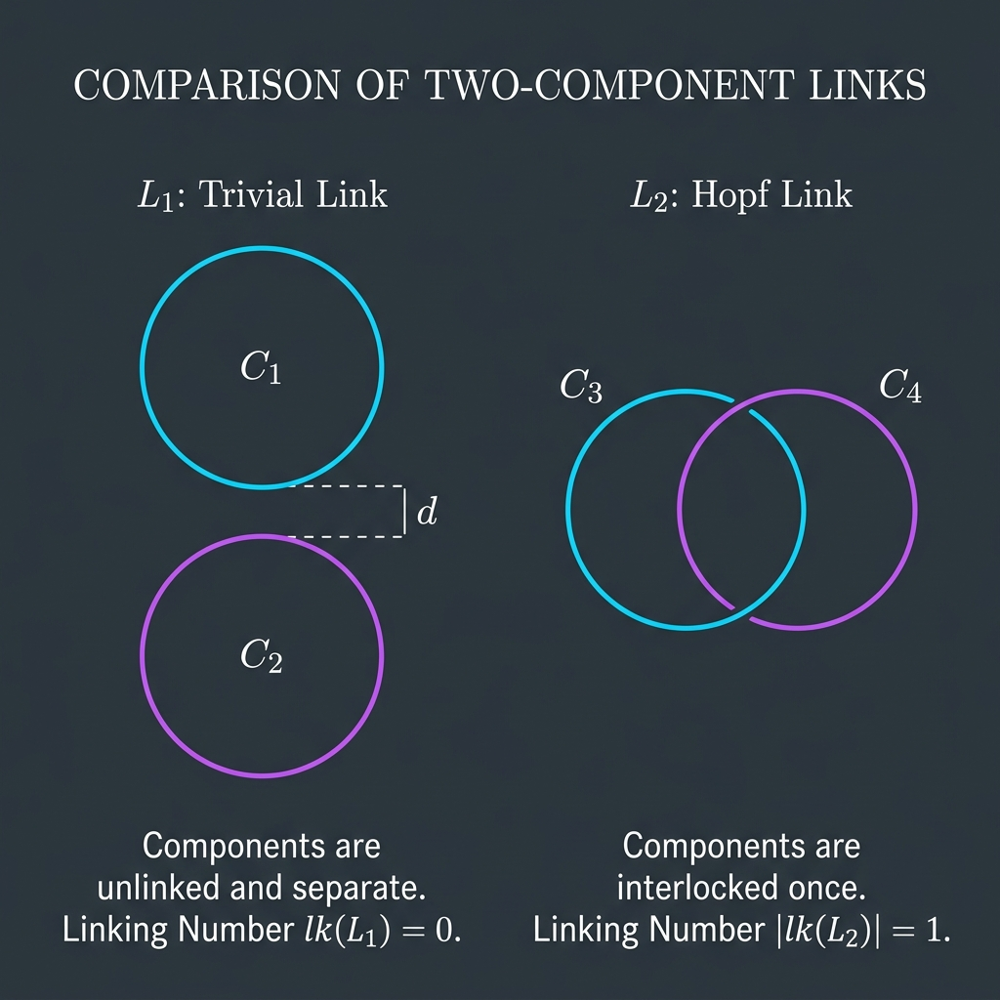

Existence of Non-Isotopic Links

Mathematical Exposition
In topology and knot theory, a link is an embedding of a disjoint union of circles into three-dimensional Euclidean space $\mathbb{R}^3$. Two links are said to be isotopic if there is a continuous deformation (an ambient isotopy) of $\mathbb{R}^3$ that maps one link to the other. The study of links is concerned with classifying them up to isotopy.
This theorem, exists_nonisotopic_link, proves that there exist two 2-component links $L_1$ and $L_2$ that are not isotopic. This is a fundamental result in link theory, showing that link isotopy classes are non-trivial.
The Link Configurations
We construct two specific links, each consisting of two components:
- The Trivial Link $L_1$: Consists of a base circle $C$ in the $xy$-plane and a parallel circle $K_1$ at height $z = 2$. Clearly, these two circles are unlinked.
- The Hopf Link $L_2$: Consists of the same base circle $C$ in the $xy$-plane and a circle $K_2$ of radius 1 centered at $(1, 0, 0)$ in the vertical $xz$-plane. $K_2$ passes through the center of $C$ at $(0,0,0)$ and goes around the boundary of $C$, making them linked.
The Invariant: Contractibility in the Complement
To prove that $L_1$ and $L_2$ are not isotopic, we define a topological invariant: contractibility of one component in the complement of the other.
For a 2-component link $L = (K, L)$, we say $K$ is contractible in the complement of $L$ if there exists a homotopy $H: S^1 \times [0, 1] \to \mathbb{R}^3$ such that:
- $H(t, 0) = K(t)$ (the original embedding of the first component)
- $H(t, 1) = P$ (a single point)
- $H(t, s) \notin \text{range}(L)$ for all $t, s$ (the homotopy never intersects the second component)
The Proof Strategy
- $L_1$ is Contractible in the Complement: We explicitly define a contracting homotopy $H_1(t, s) = ((1-s)\cos t, (1-s)\sin t, 2)$. Since the $z$-coordinate is always 2, this homotopy lies entirely in the plane $z = 2$, which is disjoint from $C$ (lying at $z = 0$). Thus, $K_1$ contracts to $(0,0,2)$ in the complement of $C$.
- Isotopy Preserves Contractibility: We show that if two links $L_1$ and $L_2$ are isotopic, and the first component of $L_1$ is contractible in the complement of the second, then the first component of $L_2$ must also be contractible in the complement of its second component. This is proved by composing the contracting homotopy with the homeomorphisms given by the ambient isotopy.
- $L_2$ is NOT Contractible in the Complement: This is the core of the proof. If $K_2$ were contractible in the complement of $C$, we could compose the homotopy with a projection map $F: \mathbb{R}^3 \setminus C \to S^1$. This would yield a homotopy on the circle $S^1$ from the identity map (which has degree 1) to a constant map (which has degree 0). By lifting this homotopy to the universal cover $\mathbb{R} \to S^1$ (the exponential map), we obtain a contradiction because the boundary conditions require the lifted map to be periodic but non-periodic at the same time, leading to a contradiction ($2\pi = 0$).
Consequently, $L_1$ and $L_2$ cannot be isotopic.
import Mathlib
import ChallengeDeps
open LeanEval.KnotTheory
open ContinuousMap
open Complex
open Topology
open Set
namespace Submission
lemma exp_mul_I_injOn : Set.InjOn (fun t : ℝ ↦ Complex.exp (t * Complex.I)) (Set.Ico 0 (2 * Real.pi)) := by
rintro t ht u hu h
rw [Complex.exp_eq_exp_iff_exists_int] at h
rcases h with ⟨n, hn⟩
have h_mul : (t : ℂ) * Complex.I = ((u : ℂ) + (n : ℂ) * (2 * ↑Real.pi)) * Complex.I := by
calc (t : ℂ) * Complex.I = (u : ℂ) * Complex.I + (n : ℂ) * (2 * ↑Real.pi * Complex.I) := hn
_ = ((u : ℂ) + (n : ℂ) * (2 * ↑Real.pi)) * Complex.I := by ring
have h_eq2 : (t : ℂ) = (u : ℂ) + (n : ℂ) * (2 * ↑Real.pi) :=
(mul_left_inj' Complex.I_ne_zero).mp h_mul
have h_eq3 : (t : ℂ) = ↑((u : ℝ) + (n : ℝ) * (2 * Real.pi)) := by
push_cast
exact h_eq2
have h_eq4 : t = u + (n : ℝ) * (2 * Real.pi) := Complex.ofReal_injective h_eq3
have h_pi : 0 < 2 * Real.pi := by
have : 0 < Real.pi := Real.pi_pos
positivity
have h_tu1 : t - u < 2 * Real.pi := by
have : t < 2 * Real.pi := ht.2
have : 0 ≤ u := hu.1
linarith
have h_tu2 : -(2 * Real.pi) < t - u := by
have : 0 ≤ t := ht.1
have : u < 2 * Real.pi := hu.2
linarith
have h_n_eq : (n : ℝ) * (2 * Real.pi) = t - u := by linarith
have h_n1 : (n : ℝ) * (2 * Real.pi) < 1 * (2 * Real.pi) := by
rw [h_n_eq, one_mul]
exact h_tu1
have h_n2 : -1 * (2 * Real.pi) < (n : ℝ) * (2 * Real.pi) := by
rw [h_n_eq, neg_one_mul]
exact h_tu2
have h_n_lt : (n : ℝ) < 1 := lt_of_mul_lt_mul_right h_n1 h_pi.le
have h_n_gt : -1 < (n : ℝ) := lt_of_mul_lt_mul_right h_n2 h_pi.le
have h_n_zero : n = 0 := by
have h_n_int1 : n < 1 := by exact_mod_cast h_n_lt
have h_n_int2 : -1 < n := by exact_mod_cast h_n_gt
omega
subst h_n_zero
simp at h_eq4
exact h_eq4
noncomputable def C_curve (t : ℝ) : R3 := WithLp.toLp 2 ![Real.cos t, Real.sin t, 0]
noncomputable def K1_curve (t : ℝ) : R3 := WithLp.toLp 2 ![Real.cos t, Real.sin t, 2]
noncomputable def K2_curve (t : ℝ) : R3 := WithLp.toLp 2 ![1 + Real.cos t, 0, Real.sin t]
lemma L1_disjoint : Disjoint (Set.range K1_curve) (Set.range C_curve) := by
rw [Set.disjoint_left]
rintro p ⟨t, ht⟩ ⟨u, hu⟩
have h1 : p.ofLp 2 = 2 := by
rw [← ht]
rfl
have h2 : p.ofLp 2 = 0 := by
rw [← hu]
rfl
rw [h1] at h2
norm_num at h2
lemma L2_disjoint : Disjoint (Set.range K2_curve) (Set.range C_curve) := by
rw [Set.disjoint_left]
rintro p ⟨t, ht⟩ ⟨u, hu⟩
have h_sin_t : Real.sin t = 0 := by
have h1 : p.ofLp 2 = Real.sin t := by
rw [← ht]
rfl
have h2 : p.ofLp 2 = 0 := by
rw [← hu]
rfl
rw [h1] at h2
exact h2
have h_sin_u : Real.sin u = 0 := by
have h1 : p.ofLp 1 = 0 := by
rw [← ht]
rfl
have h2 : p.ofLp 1 = Real.sin u := by
rw [← hu]
rfl
rw [h1] at h2
exact h2.symm
have h_cos_u : Real.cos u = 1 + Real.cos t := by
have h1 : p.ofLp 0 = 1 + Real.cos t := by
rw [← ht]
rfl
have h2 : p.ofLp 0 = Real.cos u := by
rw [← hu]
rfl
rw [h1] at h2
exact h2.symm
have h_eq1 : Real.cos t ^ 2 + Real.sin t ^ 2 = 1 := Real.cos_sq_add_sin_sq t
have h_eq2 : Real.cos u ^ 2 + Real.sin u ^ 2 = 1 := Real.cos_sq_add_sin_sq u
have h_cos_sq_t : Real.cos t ^ 2 = 1 := by
nlinarith [h_eq1, h_sin_t]
have h_cos_sq_u : Real.cos u ^ 2 = 1 := by
nlinarith [h_eq2, h_sin_u]
have h_cos_u_eq : (1 + Real.cos t) ^ 2 = 1 := by
calc (1 + Real.cos t) ^ 2 = Real.cos u ^ 2 := by rw [← h_cos_u]
_ = 1 := h_cos_sq_u
have h_cos_t_val : 2 * Real.cos t = -1 := by
have h_ring : (1 + Real.cos t) ^ 2 = 1 + 2 * Real.cos t + Real.cos t ^ 2 := by ring
nlinarith [h_cos_u_eq, h_ring, h_cos_sq_t]
have h_cos_t_val2 : Real.cos t = - 1 / 2 := by linarith [h_cos_t_val]
have h_contra : (1 / 4 : ℝ) = 1 := by
calc (1 / 4 : ℝ) = (- 1 / 2 : ℝ) ^ 2 := by norm_num
_ = (Real.cos t) ^ 2 := by rw [h_cos_t_val2]
_ = 1 := h_cos_sq_t
norm_num at h_contra
noncomputable def e := (WithLp.linearEquiv 2 ℝ (Fin 3 → ℝ)).toContinuousLinearEquiv
lemma test_hasDerivAt_C (t : ℝ) :
HasDerivAt (fun t => WithLp.ofLp (C_curve t)) ![-Real.sin t, Real.cos t, 0] t := by
rw [hasDerivAt_pi]
intro i
fin_cases i
· simp [C_curve]
exact Real.hasDerivAt_cos t
· simp [C_curve]
exact Real.hasDerivAt_sin t
· simp [C_curve]
exact hasDerivAt_const t 0
lemma hasDerivAt_C (t : ℝ) :
HasDerivAt C_curve (WithLp.toLp 2 ![-Real.sin t, Real.cos t, 0]) t := by
have h := test_hasDerivAt_C t
have h2 := HasDerivAt.clm_apply (hasDerivAt_const t e.symm.toContinuousLinearMap) h
simp only [ContinuousLinearMap.zero_apply, zero_add] at h2
have h_eq : (fun y => e.symm.toContinuousLinearMap (C_curve y).ofLp) = C_curve := by
ext y
dsimp [e]
have h_eq2 : e.symm.toContinuousLinearMap ![-Real.sin t, Real.cos t, 0] = WithLp.toLp 2 ![-Real.sin t, Real.cos t, 0] := by
dsimp [e]
rw [h_eq, h_eq2] at h2
exact h2
lemma test_hasDerivAt_K1 (t : ℝ) :
HasDerivAt (fun t => WithLp.ofLp (K1_curve t)) ![-Real.sin t, Real.cos t, 0] t := by
rw [hasDerivAt_pi]
intro i
fin_cases i
· simp [K1_curve]
exact Real.hasDerivAt_cos t
· simp [K1_curve]
exact Real.hasDerivAt_sin t
· simp [K1_curve]
exact hasDerivAt_const t 2
lemma hasDerivAt_K1 (t : ℝ) :
HasDerivAt K1_curve (WithLp.toLp 2 ![-Real.sin t, Real.cos t, 0]) t := by
have h := test_hasDerivAt_K1 t
have h2 := HasDerivAt.clm_apply (hasDerivAt_const t e.symm.toContinuousLinearMap) h
simp only [ContinuousLinearMap.zero_apply, zero_add] at h2
have h_eq : (fun y => e.symm.toContinuousLinearMap (K1_curve y).ofLp) = K1_curve := by
ext y
dsimp [e]
have h_eq2 : e.symm.toContinuousLinearMap ![-Real.sin t, Real.cos t, 0] = WithLp.toLp 2 ![-Real.sin t, Real.cos t, 0] := by
dsimp [e]
rw [h_eq, h_eq2] at h2
exact h2
lemma test_hasDerivAt_K2 (t : ℝ) :
HasDerivAt (fun t => WithLp.ofLp (K2_curve t)) ![-Real.sin t, 0, Real.cos t] t := by
rw [hasDerivAt_pi]
intro i
fin_cases i
· simp [K2_curve]
exact Real.hasDerivAt_cos t
· simp [K2_curve]
exact hasDerivAt_const t 0
· simp [K2_curve]
exact Real.hasDerivAt_sin t
lemma hasDerivAt_K2 (t : ℝ) :
HasDerivAt K2_curve (WithLp.toLp 2 ![-Real.sin t, 0, Real.cos t]) t := by
have h := test_hasDerivAt_K2 t
have h2 := HasDerivAt.clm_apply (hasDerivAt_const t e.symm.toContinuousLinearMap) h
simp only [ContinuousLinearMap.zero_apply, zero_add] at h2
have h_eq : (fun y => e.symm.toContinuousLinearMap (K2_curve y).ofLp) = K2_curve := by
ext y
dsimp [e]
have h_eq2 : e.symm.toContinuousLinearMap ![-Real.sin t, 0, Real.cos t] = WithLp.toLp 2 ![-Real.sin t, 0, Real.cos t] := by
dsimp [e]
rw [h_eq, h_eq2] at h2
exact h2
noncomputable def C_knot : Knot where
curve := C_curve
smooth := by
rw [contDiff_piLp 2]
intro i
fin_cases i
· simp [C_curve]
exact Real.contDiff_cos
· simp [C_curve]
exact Real.contDiff_sin
· simp [C_curve]
exact contDiff_const
periodic := by
intro t
simp [C_curve, Real.cos_add_two_pi, Real.sin_add_two_pi]
injOn := by
intro t ht u hu h
have h_of := congrArg WithLp.ofLp h
rw [WithLp.ofLp_toLp, WithLp.ofLp_toLp] at h_of
have h_cos : Real.cos t = Real.cos u := congrFun h_of 0
have h_sin : Real.sin t = Real.sin u := congrFun h_of 1
have h_exp : Complex.exp (t * Complex.I) = Complex.exp (u * Complex.I) := by
rw [Complex.exp_mul_I, Complex.exp_mul_I]
rw [← Complex.ofReal_cos, ← Complex.ofReal_sin, ← Complex.ofReal_cos, ← Complex.ofReal_sin]
rw [h_cos, h_sin]
exact exp_mul_I_injOn ht hu h_exp
immersion := by
intro t
have h_deriv := (hasDerivAt_C t).deriv
rw [h_deriv]
intro h
have h_of := congrArg WithLp.ofLp h
rw [WithLp.ofLp_toLp, WithLp.ofLp_zero] at h_of
have h_sin : -Real.sin t = 0 := congrFun h_of 0
have h_cos : Real.cos t = 0 := congrFun h_of 1
have h_sin2 : Real.sin t = 0 := by linarith
have h_sq : Real.cos t ^ 2 + Real.sin t ^ 2 = 1 := Real.cos_sq_add_sin_sq t
rw [h_cos, h_sin2] at h_sq
norm_num at h_sq
noncomputable def K1_knot : Knot where
curve := K1_curve
smooth := by
rw [contDiff_piLp 2]
intro i
fin_cases i
· simp [K1_curve]
exact Real.contDiff_cos
· simp [K1_curve]
exact Real.contDiff_sin
· simp [K1_curve]
exact contDiff_const
periodic := by
intro t
simp [K1_curve, Real.cos_add_two_pi, Real.sin_add_two_pi]
injOn := by
intro t ht u hu h
have h_of := congrArg WithLp.ofLp h
rw [WithLp.ofLp_toLp, WithLp.ofLp_toLp] at h_of
have h_cos : Real.cos t = Real.cos u := congrFun h_of 0
have h_sin : Real.sin t = Real.sin u := congrFun h_of 1
have h_exp : Complex.exp (t * Complex.I) = Complex.exp (u * Complex.I) := by
rw [Complex.exp_mul_I, Complex.exp_mul_I]
rw [← Complex.ofReal_cos, ← Complex.ofReal_sin, ← Complex.ofReal_cos, ← Complex.ofReal_sin]
rw [h_cos, h_sin]
exact exp_mul_I_injOn ht hu h_exp
immersion := by
intro t
have h_deriv := (hasDerivAt_K1 t).deriv
rw [h_deriv]
intro h
have h_of := congrArg WithLp.ofLp h
rw [WithLp.ofLp_toLp, WithLp.ofLp_zero] at h_of
have h_sin : -Real.sin t = 0 := congrFun h_of 0
have h_cos : Real.cos t = 0 := congrFun h_of 1
have h_sin2 : Real.sin t = 0 := by linarith
have h_sq : Real.cos t ^ 2 + Real.sin t ^ 2 = 1 := Real.cos_sq_add_sin_sq t
rw [h_cos, h_sin2] at h_sq
norm_num at h_sq
noncomputable def K2_knot : Knot where
curve := K2_curve
smooth := by
rw [contDiff_piLp 2]
intro i
fin_cases i
· simp [K2_curve]
exact contDiff_const.add Real.contDiff_cos
· simp [K2_curve]
exact contDiff_const
· simp [K2_curve]
exact Real.contDiff_sin
periodic := by
intro t
simp [K2_curve, Real.cos_add_two_pi, Real.sin_add_two_pi]
injOn := by
intro t ht u hu h
have h_of := congrArg WithLp.ofLp h
rw [WithLp.ofLp_toLp, WithLp.ofLp_toLp] at h_of
have h_cos : Real.cos t = Real.cos u := by
have h0 := congrFun h_of 0
simp [K2_curve] at h0
linarith
have h_sin : Real.sin t = Real.sin u := by
have h2 := congrFun h_of 2
exact h2
have h_exp : Complex.exp (t * Complex.I) = Complex.exp (u * Complex.I) := by
rw [Complex.exp_mul_I, Complex.exp_mul_I]
rw [← Complex.ofReal_cos, ← Complex.ofReal_sin, ← Complex.ofReal_cos, ← Complex.ofReal_sin]
rw [h_cos, h_sin]
exact exp_mul_I_injOn ht hu h_exp
immersion := by
intro t
have h_deriv := (hasDerivAt_K2 t).deriv
rw [h_deriv]
intro h
have h_of := congrArg WithLp.ofLp h
rw [WithLp.ofLp_toLp, WithLp.ofLp_zero] at h_of
have h_sin : -Real.sin t = 0 := congrFun h_of 0
have h_cos : Real.cos t = 0 := congrFun h_of 2
have h_sin2 : Real.sin t = 0 := by linarith
have h_sq : Real.cos t ^ 2 + Real.sin t ^ 2 = 1 := Real.cos_sq_add_sin_sq t
rw [h_cos, h_sin2] at h_sq
norm_num at h_sq
noncomputable def L1 : TwoLink where
K := K1_knot
L := C_knot
disjoint := L1_disjoint
noncomputable def L2 : TwoLink where
K := K2_knot
L := C_knot
disjoint := L2_disjoint
def is_contractible_in_complement (L : TwoLink) : Prop :=
∃ (H : C(ℝ × ℝ, R3)),
(∀ t, H (t, 0) = L.K.curve t) ∧
(∀ t, H (t, 1) = H (0, 1)) ∧
(∀ t s, H (t + 2 * Real.pi, s) = H (t, s)) ∧
(∀ t s, H (t, s) ∉ Set.range L.L.curve)
lemma contractible_isotopic {L₁ L₂ : TwoLink} (h : L₁.Isotopic L₂)
(hc : is_contractible_in_complement L₁) : is_contractible_in_complement L₂ := by
rcases h with ⟨Φ, σ, τ, hK, hL⟩
rcases hc with ⟨H, hH0, hH1, hHp, hHd⟩
have h_H1_cont : Continuous (Φ.H 1) := by
have h_eq : Φ.H 1 = (Function.uncurry Φ.H) ∘ (fun x : R3 ↦ Prod.mk (1 : ℝ) x) := by ext; rfl
rw [h_eq]
exact Φ.smooth.continuous.comp (continuous_const.prodMk continuous_id)
have h_finv_cont : Continuous σ.finv := σ.smooth_inv.continuous
let H' : C(ℝ × ℝ, R3) := ⟨fun p => Φ.H 1 (H (σ.finv p.1, p.2)), by
refine h_H1_cont.comp ?_
refine H.continuous.comp ?_
exact (h_finv_cont.comp continuous_fst).prodMk continuous_snd⟩
use H'
refine ⟨?_, ?_, ?_, ?_⟩
· intro t
dsimp [H']
rw [hH0 (σ.finv t)]
have h_eq := hK (σ.finv t)
rw [σ.right_inv t] at h_eq
exact h_eq
· intro t
dsimp [H']
rw [hH1 (σ.finv t), hH1 (σ.finv 0)]
· intro t s
dsimp [H']
rw [σ.periodic_inv t, hHp (σ.finv t) s]
· intro t s h_mem
rcases h_mem with ⟨u, hu⟩
dsimp [H'] at hu
have h_eq2 : H (σ.finv t, s) = L₁.L.curve (τ.finv u) := by
calc H (σ.finv t, s) = Φ.Hinv 1 (Φ.H 1 (H (σ.finv t, s))) := (Φ.inv_left 1 _).symm
_ = Φ.Hinv 1 (L₂.L.curve u) := by rw [hu]
_ = Φ.Hinv 1 (Φ.H 1 (L₁.L.curve (τ.finv u))) := by
rw [hL (τ.finv u), τ.right_inv u]
_ = L₁.L.curve (τ.finv u) := Φ.inv_left 1 _
exact hHd (σ.finv t) s ⟨τ.finv u, h_eq2.symm⟩
abbrev S_comp : Type := {p : R3 // p ∉ Set.range C_curve}
lemma norm_normalized {z : ℂ} (hz : z ≠ 0) : ‖z / (‖z‖ : ℂ)‖ = 1 := by
rw [norm_div]
have h_norm : ‖(‖z‖ : ℂ)‖ = ‖z‖ := RCLike.norm_of_nonneg (norm_nonneg z)
rw [h_norm]
exact div_self (norm_ne_zero_iff.mpr hz)
noncomputable def q_fun (p : S_comp) : ℂ :=
(Real.sqrt (p.val.ofLp 0 ^ 2 + p.val.ofLp 1 ^ 2) - 1 : ℝ) + p.val.ofLp 2 * Complex.I
lemma q_fun_ne_zero (p : S_comp) : q_fun p ≠ 0 := by
intro h_zero
have h_re : (q_fun p).re = 0 := congrArg Complex.re h_zero
have h_im : (q_fun p).im = 0 := congrArg Complex.im h_zero
dsimp [q_fun] at h_re h_im
simp at h_re h_im
have hr : Real.sqrt (p.val.ofLp 0 ^ 2 + p.val.ofLp 1 ^ 2) = 1 := by linarith
have h_xy_nonneg : 0 ≤ p.val.ofLp 0 ^ 2 + p.val.ofLp 1 ^ 2 := by positivity
have h_sq : p.val.ofLp 0 ^ 2 + p.val.ofLp 1 ^ 2 = 1 := by
calc p.val.ofLp 0 ^ 2 + p.val.ofLp 1 ^ 2 = (Real.sqrt (p.val.ofLp 0 ^ 2 + p.val.ofLp 1 ^ 2))^2 := (Real.sq_sqrt h_xy_nonneg).symm
_ = 1^2 := by rw [hr]
_ = 1 := by norm_num
have hw_norm : ‖(⟨p.val.ofLp 0, p.val.ofLp 1⟩ : ℂ)‖ = 1 := by
have h_sq2 : ‖(⟨p.val.ofLp 0, p.val.ofLp 1⟩ : ℂ)‖^2 = 1 := by
rw [RCLike.norm_sq_eq_def]
rw [← sq, ← sq]
exact h_sq
nlinarith [h_sq2, norm_nonneg (⟨p.val.ofLp 0, p.val.ofLp 1⟩ : ℂ)]
let w_circle : Circle := ⟨⟨p.val.ofLp 0, p.val.ofLp 1⟩, mem_sphere_zero_iff_norm.2 hw_norm⟩
obtain ⟨t, ht⟩ := Circle.exp_surjective w_circle
have ht_coe : (Circle.exp t : ℂ) = (w_circle : ℂ) := congrArg Subtype.val ht
have h_cos : Real.cos t = p.val.ofLp 0 := by
have h1 : (Circle.exp t : ℂ).re = (w_circle : ℂ).re := congrArg Complex.re ht_coe
rw [Circle.coe_exp] at h1
simp [exp_mul_I] at h1
exact h1
have h_sin : Real.sin t = p.val.ofLp 1 := by
have h1 : (Circle.exp t : ℂ).im = (w_circle : ℂ).im := congrArg Complex.im ht_coe
rw [Circle.coe_exp] at h1
simp [exp_mul_I] at h1
exact h1
have hp_eq : p.val = C_curve t := by
ext i
fin_cases i
· simp [C_curve, h_cos]
· simp [C_curve, h_sin]
· simp [C_curve]; exact h_im
have hp_in : p.val ∈ Set.range C_curve := ⟨t, hp_eq.symm⟩
exact p.property hp_in
noncomputable def F (p : S_comp) : Circle :=
⟨q_fun p / (‖q_fun p‖ : ℂ), mem_sphere_zero_iff_norm.2 (norm_normalized (q_fun_ne_zero p))⟩
lemma q_fun_continuous : Continuous q_fun := by
refine Continuous.add ?_ ?_
· refine Complex.continuous_ofReal.comp ?_
refine Continuous.sub ?_ continuous_const
refine Real.continuous_sqrt.comp ?_
refine Continuous.add ?_ ?_
· refine Continuous.pow ?_ 2
exact (continuous_apply 0).comp ((PiLp.continuous_ofLp 2 _).comp continuous_subtype_val)
· refine Continuous.pow ?_ 2
exact (continuous_apply 1).comp ((PiLp.continuous_ofLp 2 _).comp continuous_subtype_val)
· refine Continuous.mul ?_ continuous_const
refine Complex.continuous_ofReal.comp ?_
exact (continuous_apply 2).comp ((PiLp.continuous_ofLp 2 _).comp continuous_subtype_val)
lemma F_continuous : Continuous F := by
refine Continuous.subtype_mk ?_ ?_
· change Continuous (fun p => q_fun p / (‖q_fun p‖ : ℂ))
have h_div : Continuous (fun p => q_fun p / (‖q_fun p‖ : ℂ)) := by
refine Continuous.div q_fun_continuous ?_ ?_
· refine Complex.continuous_ofReal.comp ?_
refine continuous_norm.comp q_fun_continuous
· intro p h_coe
exact q_fun_ne_zero p (norm_eq_zero.mp (Complex.ofReal_injective h_coe))
exact h_div
noncomputable def H_circle (H : C(ℝ × ℝ, R3)) (h4 : ∀ t s, H (t, s) ∉ Set.range C_curve) : C(ℝ × ℝ, Circle) where
toFun p := F ⟨H p, h4 p.1 p.2⟩
continuous_toFun := F_continuous.comp (Continuous.subtype_mk H.continuous (fun p ↦ h4 p.1 p.2))
lemma projection_K2_curve (u : ℝ) (h : K2_curve u ∉ Set.range C_curve) : q_fun ⟨K2_curve u, h⟩ = Complex.exp (u * Complex.I) := by
dsimp [q_fun, K2_curve]
have h_pos : 0 ≤ 1 + Real.cos u := by
have : -1 ≤ Real.cos u := Real.neg_one_le_cos u
linarith
have h_sq : (1 + Real.cos u) ^ 2 + 0 ^ 2 = (1 + Real.cos u) ^ 2 := by ring
rw [h_sq, Real.sqrt_sq h_pos]
rw [Complex.ext_iff]
simp [Complex.exp_mul_I]
lemma F_K2_curve (u : ℝ) (h : K2_curve u ∉ Set.range C_curve) : (F ⟨K2_curve u, h⟩ : ℂ) = (Circle.exp u : ℂ) := by
have hq := projection_K2_curve u h
dsimp [F]
rw [hq]
have h_norm : ‖Complex.exp (u * Complex.I)‖ = 1 := by
exact Complex.norm_exp_ofReal_mul_I u
simp [h_norm]
noncomputable def F_homotopy (H : C(ℝ × ℝ, R3)) (h4 : ∀ t s, H (t, s) ∉ Set.range C_curve) : C(unitInterval × unitInterval, Circle) where
toFun p := H_circle H h4 (p.1 * (2 * Real.pi), (p.2 : ℝ)) * (H_circle H h4 (0, (p.2 : ℝ)))⁻¹
continuous_toFun := by
have h_scale : Continuous (fun p : unitInterval × unitInterval ↦ (p.1 * (2 * Real.pi), (p.2 : ℝ))) := by
refine (continuous_mul_const (2 * Real.pi)).comp (continuous_subtype_val.comp continuous_fst) |>.prodMk ?_
exact continuous_subtype_val.comp continuous_snd
have h_restr : Continuous (fun p : unitInterval × unitInterval ↦ ((0 : ℝ), (p.2 : ℝ))) := by
refine continuous_const.prodMk ?_
exact continuous_subtype_val.comp continuous_snd
refine Continuous.mul ?_ ?_
· exact (H_circle H h4).continuous.comp h_scale
· refine Continuous.inv ?_
exact (H_circle H h4).continuous.comp h_restr
lemma continuous_integer_valued_const (f : C(unitInterval, ℝ)) (hf : ∀ x, ∃ k : ℤ, f x = k) (h0 : f 0 = 0) : ∀ x, f x = 0 := by
intro x
by_contra h_nz
have h_abs : (1 : ℝ) ≤ |f x| := by
rcases hf x with ⟨k, hk⟩
rw [hk]
have : k ≠ 0 := by
intro h_zero
rw [h_zero] at hk
simp at hk
exact h_nz hk
have h_int : k ≤ -1 ∨ 1 ≤ k := by omega
have : (1 : ℤ) ≤ |k| := by
rcases h_int with h | h
· rw [abs_of_neg (by omega)]; omega
· rw [abs_of_nonneg (by omega)]; omega
exact_mod_cast this
rcases lt_or_gt_of_ne h_nz with h_lt | h_gt
· have h_range : Set.Icc (f x) (f 0) ⊆ Set.range f := intermediate_value_univ x 0 f.continuous
have h_mem : (-1/2 : ℝ) ∈ Set.Icc (f x) (f 0) := by
rw [h0]
refine ⟨?_, by linarith⟩
rw [abs_of_neg h_lt] at h_abs
linarith
rcases h_range h_mem with ⟨y, hy⟩
rcases hf y with ⟨k, hk⟩
rw [hk] at hy
have h_contra : (2 * k : ℤ) = -1 := by
exact_mod_cast (by linarith : 2 * (k : ℝ) = -1)
omega
· have h_range : Set.Icc (f 0) (f x) ⊆ Set.range f := intermediate_value_univ 0 x f.continuous
have h_mem : (1/2 : ℝ) ∈ Set.Icc (f 0) (f x) := by
rw [h0]
refine ⟨by linarith, ?_⟩
rw [abs_of_pos h_gt] at h_abs
linarith
rcases h_range h_mem with ⟨y, hy⟩
rcases hf y with ⟨k, hk⟩
rw [hk] at hy
have h_contra : (2 * k : ℤ) = 1 := by
exact_mod_cast (by linarith : 2 * (k : ℝ) = 1)
omega
lemma lift_const (g : C(unitInterval, ℝ)) (hg : ∀ x, Circle.exp (g x) = 1) : ∀ x, g x = g 0 := by
have h_int : ∀ x, ∃ k : ℤ, (g x - g 0) / (2 * Real.pi) = k := by
intro x
have h_eq : Circle.exp (g x - g 0) = 1 := by
have h_eq2 : Circle.exp (g x - g 0) = Circle.exp (g x) * (Circle.exp (g 0))⁻¹ := by
ext
simp only [Circle.coe_exp]
push_cast
have h_ring : (g x - g 0 : ℂ) * Complex.I = g x * Complex.I - g 0 * Complex.I := by ring
rw [h_ring, Complex.exp_sub]
ring
rw [h_eq2, hg, hg]
simp
rcases Circle.exp_eq_one.mp h_eq with ⟨k, hk⟩
use k
rw [hk]
have : 2 * Real.pi ≠ 0 := by
have : 0 < Real.pi := Real.pi_pos
linarith
rw [mul_div_cancel_right₀ _ this]
have h0 : (g 0 - g 0) / (2 * Real.pi) = 0 := by simp
have h_const : ∀ x, (g x - g 0) / (2 * Real.pi) = 0 := by
let f : C(unitInterval, ℝ) := ⟨fun x ↦ (g x - g 0) / (2 * Real.pi), by continuity⟩
exact continuous_integer_valued_const f h_int h0
intro x
have h_eq : (g x - g 0) / (2 * Real.pi) = 0 := h_const x
have h_pi : 2 * Real.pi ≠ 0 := by
have : 0 < Real.pi := Real.pi_pos
linarith
have h_sub : g x - g 0 = 0 := by
calc g x - g 0 = ((g x - g 0) / (2 * Real.pi)) * (2 * Real.pi) := (div_mul_cancel₀ _ h_pi).symm
_ = 0 * (2 * Real.pi) := by rw [h_eq]
_ = 0 := by ring
linarith
noncomputable def H1 : C(ℝ × ℝ, R3) where
toFun p := WithLp.toLp 2 ![(1 - p.2) * Real.cos p.1, (1 - p.2) * Real.sin p.1, 2]
continuous_toFun := by
refine (PiLp.continuous_toLp 2 _).comp ?_
refine continuous_pi (fun i ↦ ?_)
fin_cases i
· refine (continuous_const.sub continuous_snd).mul (Real.continuous_cos.comp continuous_fst)
· refine (continuous_const.sub continuous_snd).mul (Real.continuous_sin.comp continuous_fst)
· exact continuous_const
lemma L1_contractible : is_contractible_in_complement L1 := by
use H1
refine ⟨?_, ?_, ?_, ?_⟩
· intro t
ext i
fin_cases i
· simp [H1, L1, K1_knot, K1_curve]
· simp [H1, L1, K1_knot, K1_curve]
· rfl
· intro t
ext i
fin_cases i
· simp [H1]
· simp [H1]
· rfl
· intro t s
ext i
fin_cases i
· simp [H1, Real.cos_add_two_pi]
· simp [H1, Real.sin_add_two_pi]
· rfl
· intro t s h_mem
rcases h_mem with ⟨u, hu⟩
have h_z : (H1 (t, s)).ofLp 2 = 2 := rfl
have h_C_z : (C_curve u).ofLp 2 = 0 := rfl
have h_eq : (H1 (t, s)).ofLp 2 = (C_curve u).ofLp 2 := congrArg (fun p : R3 ↦ p.ofLp 2) hu.symm
rw [h_z, h_C_z] at h_eq
norm_num at h_eq
lemma isCoveringMap_circleExp : IsCoveringMap Circle.exp := by
have h_eq : Circle.exp = AddCircle.homeomorphCircle' ∘ ((↑) : ℝ → AddCircle (2 * Real.pi)) := by
ext x
exact congrArg (fun c : Circle ↦ (c : ℂ)) (AddCircle.homeomorphCircle'_apply_mk x).symm
rw [h_eq]
rw [isCoveringMap_iff_isCoveringMapOn_univ]
have h_cov := AddCircle.isCoveringMap_coe (2 * Real.pi)
rw [isCoveringMap_iff_isCoveringMapOn_univ] at h_cov
have h_comp := IsCoveringMapOn.homeomorph_comp h_cov AddCircle.homeomorphCircle'
simp only [preimage_univ] at h_comp
exact h_comp
instance instContractibleSpaceInterval : ContractibleSpace unitInterval :=
Convex.contractibleSpace (convex_Icc (0 : ℝ) 1) (by simp : (Set.Icc (0 : ℝ) 1).Nonempty)
instance instLocPathConnectedSpaceInterval : LocPathConnectedSpace unitInterval := by
exact Convex.locPathConnectedSpace ℝ (convex_Icc (𝕜 := ℝ) (0 : ℝ) 1)
lemma joined_prod {X Y : Type*} [TopologicalSpace X] [TopologicalSpace Y] {x₁ x₂ : X} {y₁ y₂ : Y}
(hx : Joined x₁ x₂) (hy : Joined y₁ y₂) : Joined (x₁, y₁) (x₂, y₂) := by
rcases hx with ⟨p₁⟩
rcases hy with ⟨p₂⟩
let p : Path (x₁, y₁) (x₂, y₂) := {
toFun := fun t ↦ (p₁ t, p₂ t)
continuous_toFun := p₁.continuous.prodMk p₂.continuous
source' := by
rw [p₁.source, p₂.source]
target' := by
rw [p₁.target, p₂.target]
}
exact ⟨p⟩
instance instPathConnectedSpaceProd {X Y : Type*} [TopologicalSpace X] [TopologicalSpace Y]
[PathConnectedSpace X] [PathConnectedSpace Y] : PathConnectedSpace (X × Y) where
nonempty := inferInstance
joined p₁ p₂ := joined_prod (PathConnectedSpace.joined p₁.1 p₂.1) (PathConnectedSpace.joined p₁.2 p₂.2)
lemma isPathConnected_prod {X Y : Type*} [TopologicalSpace X] [TopologicalSpace Y]
{s : Set X} {t : Set Y} (hs : IsPathConnected s) (ht : IsPathConnected t) :
IsPathConnected (s ×ˢ t) := by
rcases hs with ⟨x, hx, hxs⟩
rcases ht with ⟨y, hy, hyt⟩
refine ⟨(x, y), ⟨hx, hy⟩, ?_⟩
rintro ⟨x', y'⟩ ⟨hx', hy'⟩
specialize hxs hx'
specialize hyt hy'
rcases hxs with ⟨p₁, hp₁⟩
rcases hyt with ⟨p₂, hp₂⟩
let p : Path (x, y) (x', y') := {
toFun := fun t ↦ (p₁ t, p₂ t)
continuous_toFun := p₁.continuous.prodMk p₂.continuous
source' := by
rw [p₁.source, p₂.source]
target' := by
rw [p₁.target, p₂.target]
}
refine ⟨p, fun u ↦ ⟨hp₁ u, hp₂ u⟩⟩
instance instLocPathConnectedSpaceProd {X Y : Type*} [TopologicalSpace X] [TopologicalSpace Y]
[LocPathConnectedSpace X] [LocPathConnectedSpace Y] : LocPathConnectedSpace (X × Y) where
path_connected_basis p := by
rw [nhds_prod_eq]
have h := (path_connected_basis p.1).prod (path_connected_basis p.2)
refine h.to_hasBasis ?_ ?_
· rintro ⟨s, t⟩ ⟨hs, ht⟩
refine ⟨s ×ˢ t, ⟨Filter.prod_mem_prod hs.1 ht.1, isPathConnected_prod hs.2 ht.2⟩, subset_rfl⟩
· rintro u ⟨hu_nhds, _⟩
rcases h.mem_iff.mp hu_nhds with ⟨⟨s, t⟩, ⟨⟨hs_nhds, hs_pc⟩, ⟨ht_nhds, ht_pc⟩⟩, h_sub⟩
refine ⟨⟨s, t⟩, ⟨⟨hs_nhds, hs_pc⟩, ⟨ht_nhds, ht_pc⟩⟩, h_sub⟩
lemma L2_not_contractible : ¬ is_contractible_in_complement L2 := by
intro h_contractible
rcases h_contractible with ⟨H, hH0, hH1, hHp, hHd⟩
have h4 : ∀ t s, H (t, s) ∉ Set.range C_curve := fun t s ↦ hHd t s
let f := F_homotopy H h4
have he : Circle.exp 0 = f (0, 0) := by
have h_f00 : (f (0, 0) : ℂ) = 1 := by
dsimp [f, F_homotopy]
simp
ext
simp [h_f00]
have hs : ∀ a, f a ∈ (Set.univ : Set Circle) := fun _ ↦ Set.mem_univ _
rcases IsCoveringMapOn.existsUnique_continuousMap_lifts (isCoveringMap_iff_isCoveringMapOn_univ.mp isCoveringMap_circleExp) f he hs with ⟨G_lift, ⟨hG0, hGp⟩, _⟩
have h_left : ∀ s : unitInterval, G_lift (0, s) = 0 := by
intro s
let g : C(unitInterval, ℝ) := ⟨fun x ↦ G_lift (0, x), G_lift.continuous.comp (continuous_const.prodMk continuous_id)⟩
have hg : ∀ x, Circle.exp (g x) = 1 := by
intro x
have h_eq : Circle.exp (g x) = (Circle.exp ∘ G_lift) (0, x) := rfl
rw [h_eq, hGp]
dsimp [f, F_homotopy]
simp
have hg0 : g 0 = 0 := hG0
have h_const := lift_const g hg s
change g s = 0
rw [h_const, hg0]
have h_top : ∀ t : unitInterval, G_lift (t, 1) = 0 := by
intro t
let g : C(unitInterval, ℝ) := ⟨fun x ↦ G_lift (x, 1), G_lift.continuous.comp (continuous_id.prodMk continuous_const)⟩
have hg : ∀ x, Circle.exp (g x) = 1 := by
intro x
have h_eq : Circle.exp (g x) = (Circle.exp ∘ G_lift) (x, 1) := rfl
rw [h_eq, hGp]
dsimp [f, F_homotopy]
have h_eq2 : H_circle H h4 (x * (2 * Real.pi), (1 : ℝ)) = H_circle H h4 (0, (1 : ℝ)) := by
dsimp [H_circle]
have h_eq_val : H (x * (2 * Real.pi), (1 : ℝ)) = H (0, (1 : ℝ)) := by
rw [hH1 (x * (2 * Real.pi)), hH1 0]
exact congrArg F (Subtype.ext h_eq_val)
rw [h_eq2]
simp
have hg0 : g 0 = 0 := by
change G_lift (0, 1) = 0
exact h_left 1
have h_const := lift_const g hg t
change g t = 0
rw [h_const, hg0]
have h_right : ∀ s : unitInterval, G_lift (1, s) = 0 := by
intro s
let g : C(unitInterval, ℝ) := ⟨fun x ↦ G_lift (1, x), G_lift.continuous.comp (continuous_const.prodMk continuous_id)⟩
have hg : ∀ x, Circle.exp (g x) = 1 := by
intro x
have h_eq : Circle.exp (g x) = (Circle.exp ∘ G_lift) (1, x) := rfl
rw [h_eq, hGp]
dsimp [f, F_homotopy]
have h_eq2 : H_circle H h4 (1 * (2 * Real.pi), (x : ℝ)) = H_circle H h4 (0, (x : ℝ)) := by
dsimp [H_circle]
have h_eq_val : H (1 * (2 * Real.pi), (x : ℝ)) = H (0, (x : ℝ)) := by
have h_eq_add : (1 * (2 * Real.pi)) = 0 + 2 * Real.pi := by ring
rw [h_eq_add, hHp]
exact congrArg F (Subtype.ext h_eq_val)
rw [h_eq2]
simp
have hg1 : g 1 = 0 := by
change G_lift (1, 1) = 0
exact h_top 1
have hg_eq : g s = g 1 := by
calc g s = g 0 := lift_const g hg s
_ = g 1 := (lift_const g hg 1).symm
change g s = 0
rw [hg_eq, hg1]
have h_bottom : ∀ t : unitInterval, G_lift (t, 0) = (t : ℝ) * (2 * Real.pi) := by
intro t
let g : C(unitInterval, ℝ) := ⟨fun x ↦ G_lift (x, 0) - (x : ℝ) * (2 * Real.pi), by
refine Continuous.sub ?_ ?_
· exact G_lift.continuous.comp (continuous_id.prodMk continuous_const)
· exact (continuous_mul_const (2 * Real.pi)).comp continuous_subtype_val⟩
have hg : ∀ x, Circle.exp (g x) = 1 := by
intro x
dsimp [g]
have h_K2 : ∀ y : ℝ, H_circle H h4 (y, 0) = Circle.exp y := by
intro y
have h_ne : K2_curve y ∉ Set.range C_curve := by
exact Set.disjoint_left.mp L2_disjoint (Set.mem_range_self y)
rw [← Subtype.ext (F_K2_curve y h_ne)]
dsimp [H_circle]
refine congrArg F ?_
refine Subtype.ext ?_
exact hH0 y
ext
simp only [Circle.coe_exp]
push_cast
have h_ring : ((G_lift (x, 0) - (x : ℝ) * (2 * Real.pi)) * Complex.I) = (G_lift (x, 0) * Complex.I) + (- ((x : ℝ) * 2 * Real.pi * Complex.I)) := by ring
rw [h_ring, Complex.exp_add]
have h_G : (Complex.exp (G_lift (x, 0) * Complex.I)) = (f (x, 0) : ℂ) := congrArg (fun c : Circle ↦ (c : ℂ)) (congrFun hGp (x, 0))
rw [h_G]
have h_f : (f (x, 0) : ℂ) = Complex.exp (x * 2 * Real.pi * Complex.I) := by
dsimp [f, F_homotopy]
rw [h_K2 (x * (2 * Real.pi)), h_K2 0]
simp only [Circle.coe_exp]
simp
exact congrArg Complex.exp (by ring)
rw [h_f]
rw [← Complex.exp_add]
have h_ring2 : x * 2 * Real.pi * Complex.I + - ((x : ℝ) * 2 * Real.pi * Complex.I) = 0 := by ring
rw [h_ring2]
simp
have hg0 : g 0 = 0 := by
change G_lift (0, 0) - (0 : ℝ) * (2 * Real.pi) = 0
rw [hG0]
ring
have h_const := lift_const g hg t
rw [← sub_eq_zero]
change g t = 0
rw [h_const, hg0]
have h_contra1 : G_lift (1, 0) = 0 := h_right 0
have h_contra2 : G_lift (1, 0) = 2 * Real.pi := by
have h_eq := h_bottom 1
change G_lift (1, 0) = 1 * (2 * Real.pi) at h_eq
rw [h_eq]
ring
rw [h_contra1] at h_contra2
have h_pi_pos : 0 < Real.pi := Real.pi_pos
linarith
theorem exists_nonisotopic_link : ∃ L₁ L₂ : TwoLink, ¬ L₁.Isotopic L₂ := by
use L1, L2
intro h_iso
have h_contra : is_contractible_in_complement L2 := contractible_isotopic h_iso L1_contractible
exact L2_not_contractible h_contra
end Submission